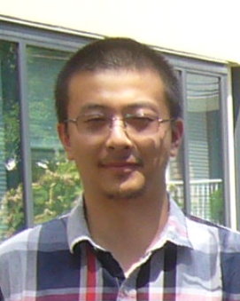

Shukai Du (CV)
Assistant Professor
Department of Mathematics
Syracuse University
Office: Carnegie 206D
Email: sdu113@syr.edu
Google Scholar profile

I am an Assistant Professor in the Department of Mathematics at Syracuse University. Before joining Syracuse, I was a Visiting Assistant Professor at the University of Wisconsin–Madison (2020–2024). I received my PhD in Applied Mathematics from the University of Delaware.
My research is motivated by the observation that many problems in science and engineering share common mathematical structures. I am interested in identifying, understanding, and leveraging these structures with analytical and computational approaches. I value both mathematical rigor and practical utility, and view them as complementary goals. My current research focuses on high-order numerical methods for high-dimensional and multiscale systems, machine learning acceleration of first-principles numerical methods, and applications including electromagnetic waves, radiative transfer, and inverse problems.
I am teaching Methods of Numerical Analysis II (MAT684) this semester.
News
- Jan 2026 New paper: J. L. Torchinsky, S. Du, and S. N. Stechmann. Angular-spatial hp-adaptivity for radiative transfer with discontinuous Galerkin spectral element methods. J. Quant. Spectrosc. Radiat. Transf. 348 (2026). DOI
- Jan 2026 Submitted: S. Du, T. Le, S. N. Stechmann. Element learning with hp-adaptivity: machine learning-based acceleration of hp-adaptive spectral element methods, and application to atmospheric radiative transfer.
- Nov 2025 Gave a talk at SIAM New York–New Jersey–Pennsylvania Section: "Inverse radiative transfer via goal-oriented adaptive mesh refinement."
- Nov 2025 Submitted: B. Cockburn, S. Du, M. A. Sánchez. A spectral analysis of hp-hybridized mixed and HDG methods for parametric second-order elliptic problems.
- Oct 2025 New paper: D. H. Marsico, S. Du, and S. N. Stechmann. Can second-order numerical accuracy be achieved for moist atmospheric dynamics with non-smoothness at cloud edge? J. Adv. Model. Earth Syst. 17 (2025). DOI
- Jul 2025 Gave a talk at the Third HKSIAM Biennial Conference, Chinese University of Hong Kong: "Accelerating finite element-type methods with machine learning on substructures."
- Mar 2025 Gave a talk at SIAM Sectional Meeting, Fort Worth, TX: "Element learning: accelerating finite element-type methods via machine learning, with applications to radiative transfer."
Research keywords
- Finite element and discontinuous Galerkin methods
- Scientific machine learning and data-driven approaches
- Symplectic and structure-preserving methods
- Adaptive mesh solver for radiative transfer
- Electromagnetic and elastic/viscoelastic waves
- Computational inverse and ill-posed problems